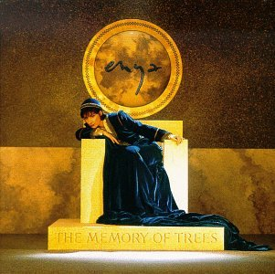
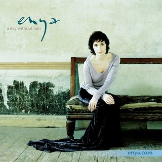
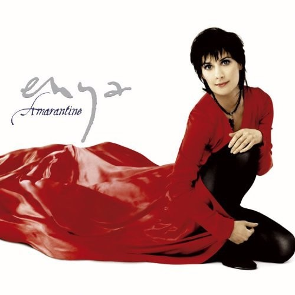

|  |
The Memory of Trees (1995)
- The Memory of Trees – 4:18
- Anywhere Is – 3:58
- Pax Deorum – 4:58
- Athair Ar Neamh – 3:39
- From Where I Am – 2:20
- China Roses – 4:47
- Hope Has a Place – 4:44
- Tea-House Moon – 2:41
- Once You Had Gold – 3:16
- La Soñadora – 3:35
- On My Way Home 1 – 5:08
Todas as músicas são compostas por Enya.
|
|
Paint the Sky with Stars (Coletânea) (1997)
- Orinoco Flow – 4:26
- Caribbean Blue – 3:58
- Book of Days – 2:56
- Anywhere Is – 3:46
- Only If... – 3:19
- The Celts – 2:57
- China Roses – 4:40
- Shepherd Moons – 3:40
- Ebudæ – 1:52
- Storms in Africa – 4:11
- Watermark – 2:26
- Paint the Sky with Stars – 4:15
- Marble Halls – 3:55
- On My Way Home – 3:38
- The Memory of Trees – 4:19
- Boadicea – 3:28
|
 |
A Day Without Rain (2000)
- A Day Without Rain
- Wild Child
- Only Time
- Tempus Vernum
- Deora Ar Mo Chroí
- Flora's Secret
- Fallen Embers
- Silver Inches
- Pilgrim
- One By One
- The First Of Autumn
- Lazy Days
|
 |
Amarantine (2005)
- Less Than a Pearl – 3:44
- Amarantine – 3:13
- It's in the Rain – 4:08
- If I Could Be Where You Are – 4:01
- The River Sings – 2:49
- Long Long Journey – 3:17
- Sumiregusa (Wild Violet) – 4:42
- Someone Said Goodbye – 4:02
- A Moment Lost – 3:08
- Drifting – 4:12
- Amid the Falling Snow – 3:38
- Water Shows the Hidden Heart – 4:39
|
|
|